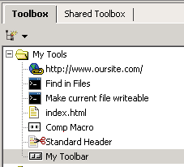
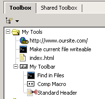
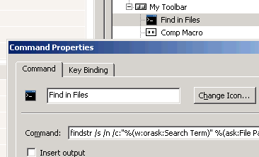
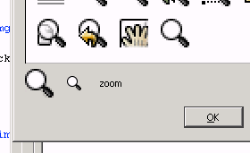
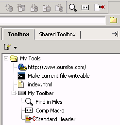

Select Toolbox|Add|New Custom Toolbar. Name
the toolbar.

Drag and drop items onto the toolbar.

Right-click to access an item's Properties. Click
Change Icon.

Choose an icon.

Use the new custom toolbar.